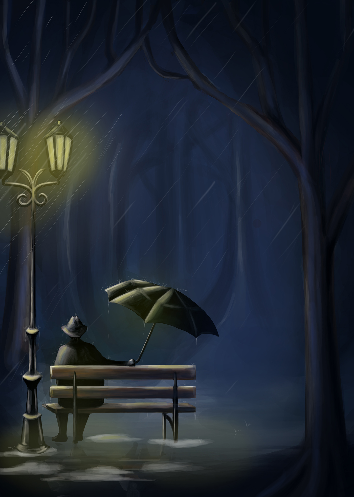
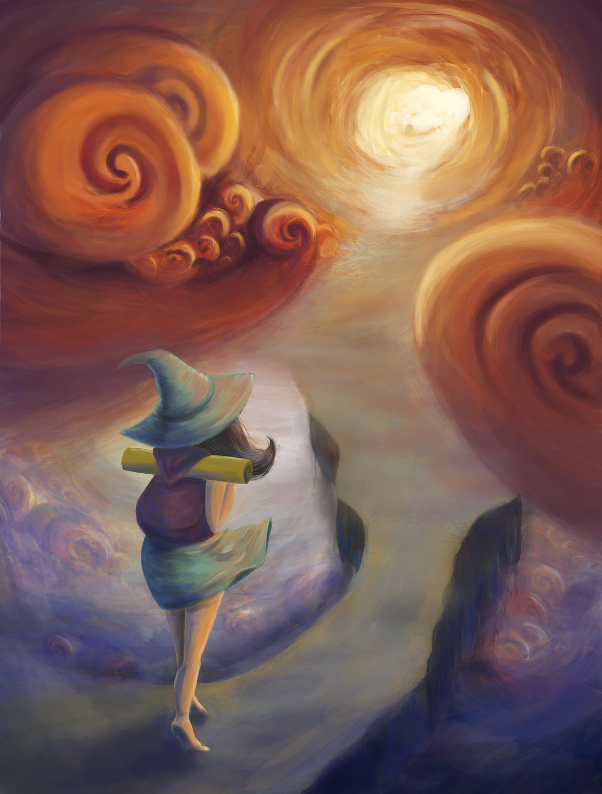

עבודות
תקשורת חזותית
הכחשה - פרוייקט סיום
עבודה במסגרת סמסטר א'. הקונספט לעבודה זו נעשה בשיתוף פעולה עם אורלי קרז'רו ואפרת איל ומבוסס על איור של המאיירת קיירה באטיסטה. ביצוע ואיור העבודה נעשה על ידי באמצעות תוכנת פוטושופ ועט גרפי.
פרוטרט עצמי
עבודה במסגרת סמסטר א'. איור נעשה על ידי באמצעות תוכנת פוטושופ ועט גרפי.
פילון
איור נעשה על ידי באמצעות תוכנת פוטושופ ועט גרפי.